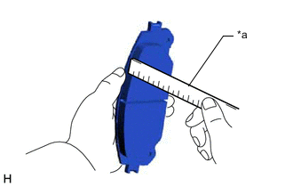
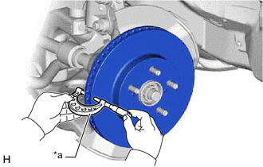
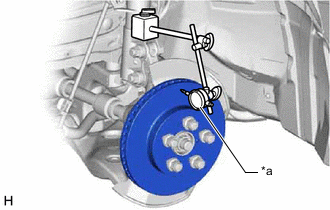

PROCEDURE
INSPECT BRAKE CYLINDER AND PISTON
Check the front disc brake cylinder bore and front disc brake piston for rust and scoring. If necessary, replace the front disc brake cylinder assembly and front disc brake piston.
INSPECT PAD LINING THICKNESS

| *a | Ruler |
Using a ruler, measure the front disc brake pad lining thickness.
| Standard Thickness |
|---|
| 10.0 mm (0.3937 in.) |
| Minimum Thickness |
|---|
| 1.0 mm (0.0394 in.) |
Tech Tips
If a front disc brake pad lining thickness is less than the minimum thickness, replace the front disc brake pads.
Be sure to check front disc thickness when replacing the front disc brake pads with new ones.
INSPECT FRONT DISC BRAKE PAD SUPPORT PLATE
Make sure that the front disc brake pad support plates have sufficient rebound, no deformation, cracks or wear, and that all rust and dirt is cleaned off. If necessary, replace the front disc brake pad support plates.
INSPECT DISC THICKNESS

| *a | Micrometer |
Using a micrometer, measure the front disc thickness.
| Standard Thickness |
|---|
| 25.0 mm (0.9843 in.) |
| Minimum Thickness |
|---|
| 22.0 mm (0.8661 in.) |
Tech Tips
If the front disc thickness is less than the minimum thickness, replace the front disc.
INSPECT DISC RUNOUT
Inspect the front axle hub bearing looseness and front axle hub runout.
Temporarily install the front disc with the 5 hub nuts.

| *a | Dial Indicator |
Using a dial indicator, measure the disc runout 10 mm (0.394 in.) from the outer edge of the front disc.
| Maximum Disc Runout |
|---|
| 0.05 mm (0.00196 in.) |
Note
Keep the magnet of the dial indicator away from the front speed sensor.
Tech Tips
If the runout exceeds the maximum value, change the installation position of the front disc to minimize the runout. If the runout exceeds the maximum even when the installation position is changed, grind the front disc. If the front disc thickness is less than the minimum, replace the front disc.
Remove the 5 hub nuts and front disc.